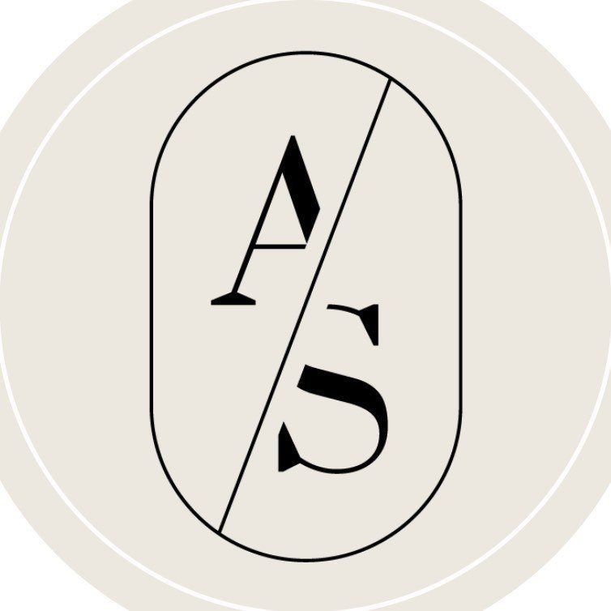
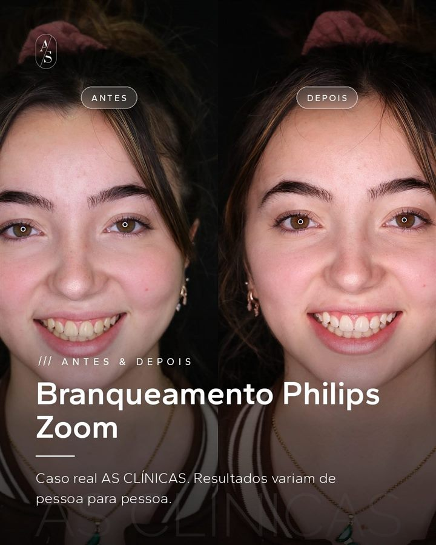
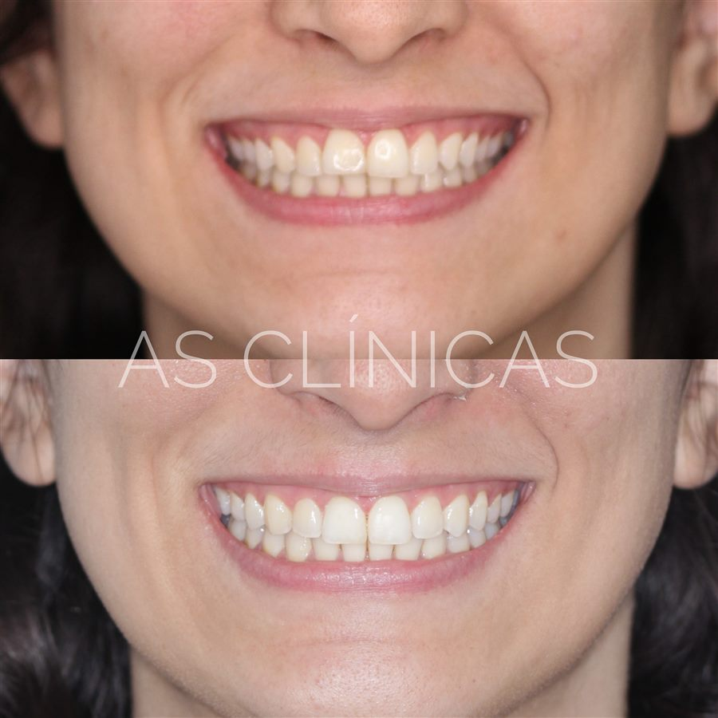
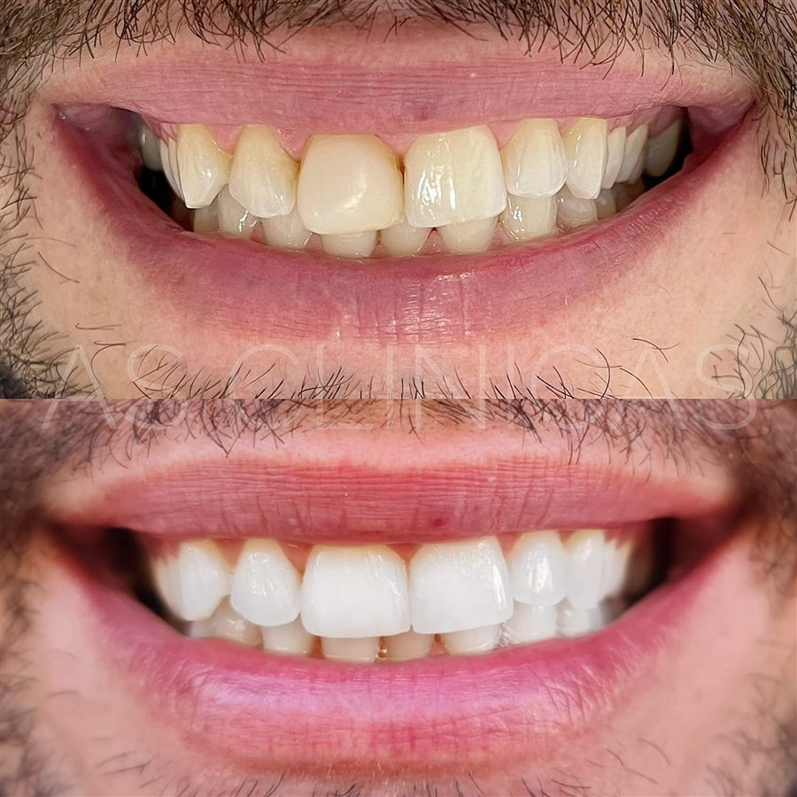

Medicina Dentária & EstéticaO seu sorriso, cuidado em Lisboa há 40 anos.
Resposta pelo WhatsApp da clínica

Dentes mais brancos, feito em consultório.

Alinhar os dentes sem aparelho à vista.

Forma, cor e harmonia, caso a caso.
Desde 1986 a acompanhar famílias, com a primeira consulta dedicada a ouvir o que quer mudar no seu sorriso.